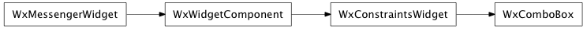

Bases: enaml.widgets.constraints_widget.ConstraintsWidget
A drop-down list from which one item can be selected at a time.
Use a combo box to select a single item from a collection of items.
The unicode strings to display in the combo box.
The integer index of the currently selected item. If the given index falls outside of the range of items, the item will be deselected.
A readonly property that will return the currently selected item. If the index falls out of range, the selected item will be the empty string.
How strongly a component hugs it’s contents’ width. ComboBoxes hug width weakly, by default.
A method called after initialization which allows the widget to bind any event handlers necessary.
The message handler for the ‘index_changed’ action from the client widget. The content will contain the selected ‘index’.
alias of __NoInterface__

Bases: enaml.qt.qt_constraints_widget.QtConstraintsWidget
A Qt implementation of an Enaml ComboBox.

Bases: enaml.wx.wx_constraints_widget.WxConstraintsWidget
A Wx implementation of an Enaml ComboBox.